Published: 2023-05-09
Source link: https://www.cnphotos.net/academy/show-138.html
Photography is the art of subtraction.
Photographers often use composition techniques that aim to create feeling or a psychological effect. One of these is negative space, a perfect example of how less is more.
©Joanna Kosinska
What is negative space?
Negative space is a term in art for the area around the main subject. In a photo, it is the empty or unused area around the subject, also called white space. It is usually empty and has little detail. It can be a strong composition tool. It guides the viewer's attention, creates emotion, and adds depth to the image.
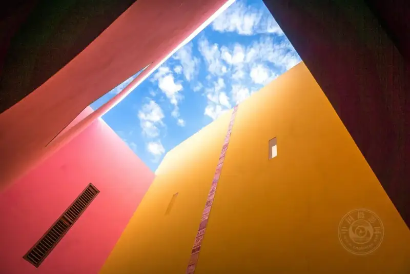
©Rod Long
In a work of art, negative space surrounds the positive space. When you balance this open space with the main subject well, an ordinary scene can become an extraordinary photo.
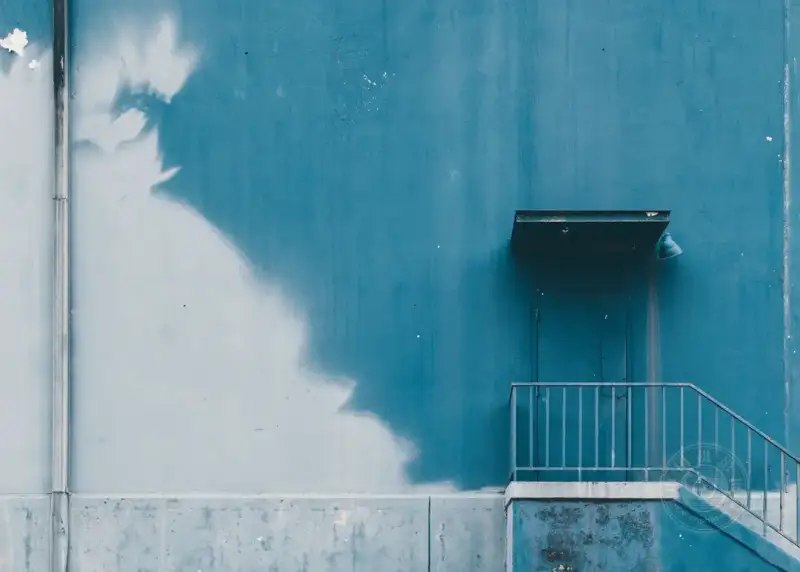
©Khara Woods
How do you use negative space?
Photographers use negative space in their work not only for looks. It also creates a psychological pull on the viewer. To explain the difference between positive and negative space, let us look at what this technique is used for.
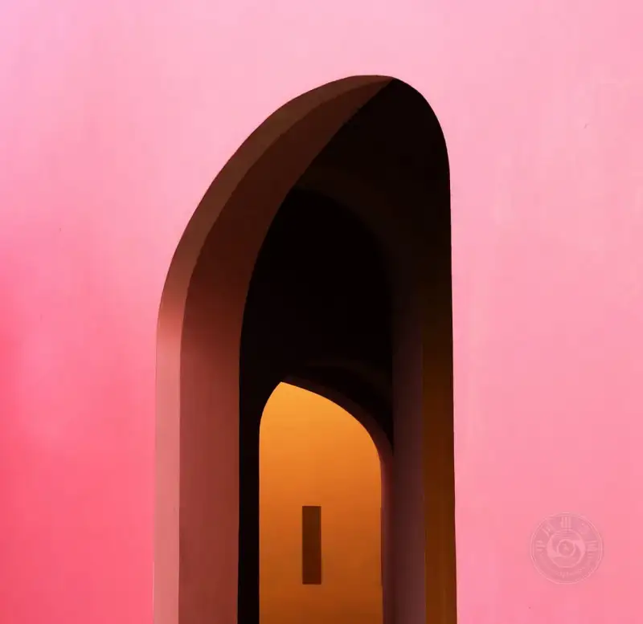
©analuisa gamboa
Simplify the composition
First, negative space simplifies the composition. Less complexity makes the frame easier to take in. The image asks less of the viewer, so the composition feels direct and clear. The empty space also gives the eye a place to rest.
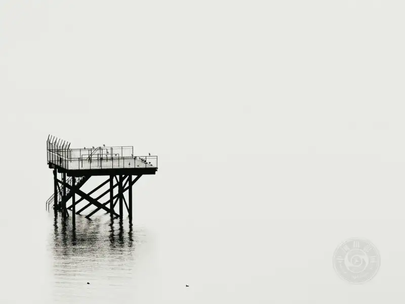
©Frederik Lower
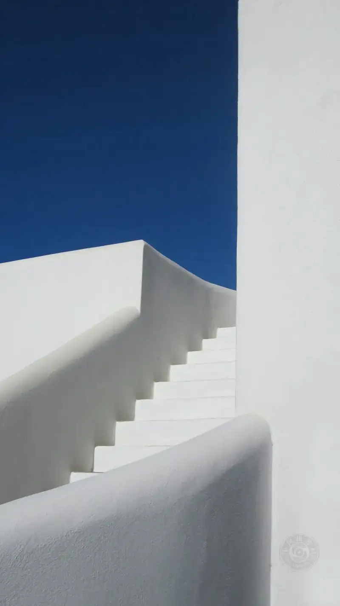
©Sigmund
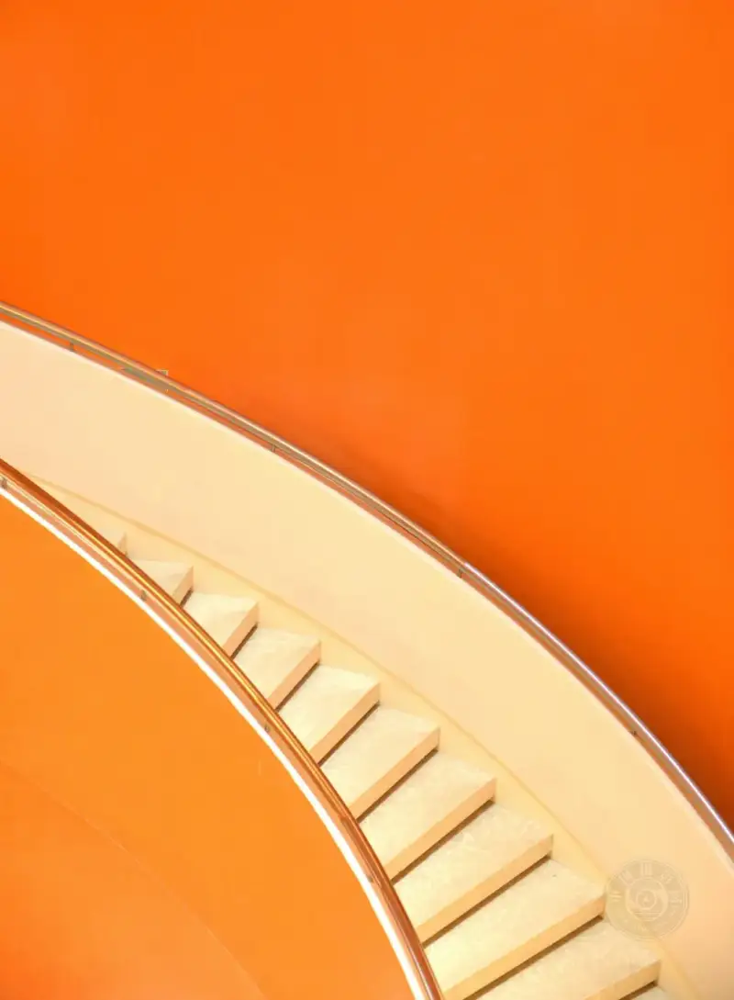
©Ambrose Chua
Guide the viewer's eye
When you surround the subject with negative space, the viewer's eye is led to the subject more easily. In a frame with a lot of empty space, the eye is drawn to the only positive space in the picture.
©Birger Strahl
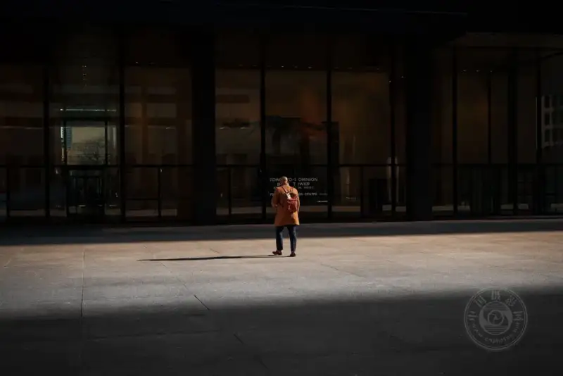
©Thom Bradley
©Peter Thomas
Emotional effect
Different ways of showing negative space can create different emotional responses. When the area of negative space is large, it can suggest loneliness, openness, silence, or simplicity.
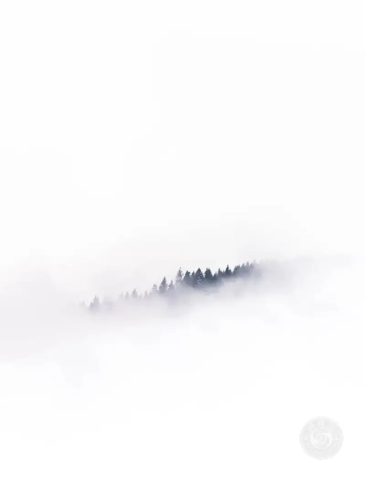
©Mads Schmidt Rasmussen
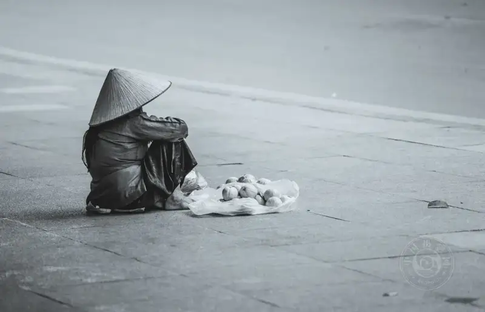
©Rod Long
©peter bucks
Establish scale
Photos with a lot of empty space are often shot with a wide-angle lens to create a wider frame. This adds extra space around the subject. At the same time, it can make the subject look small next to the space around it.
It is sometimes hard to grasp the scale of a landscape. Negative space is a good tool to show scale.
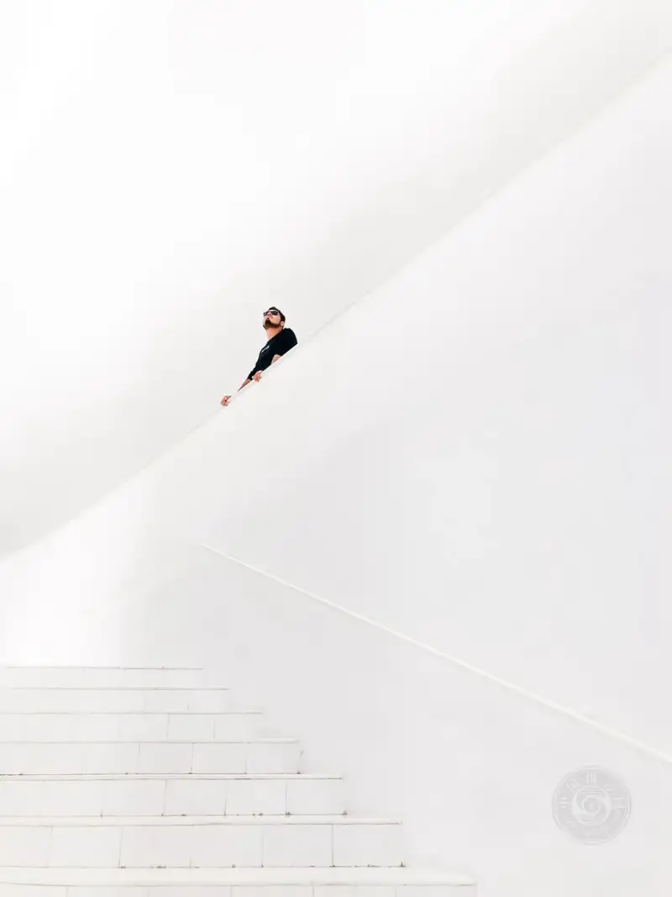
©BRUNO CERVERA
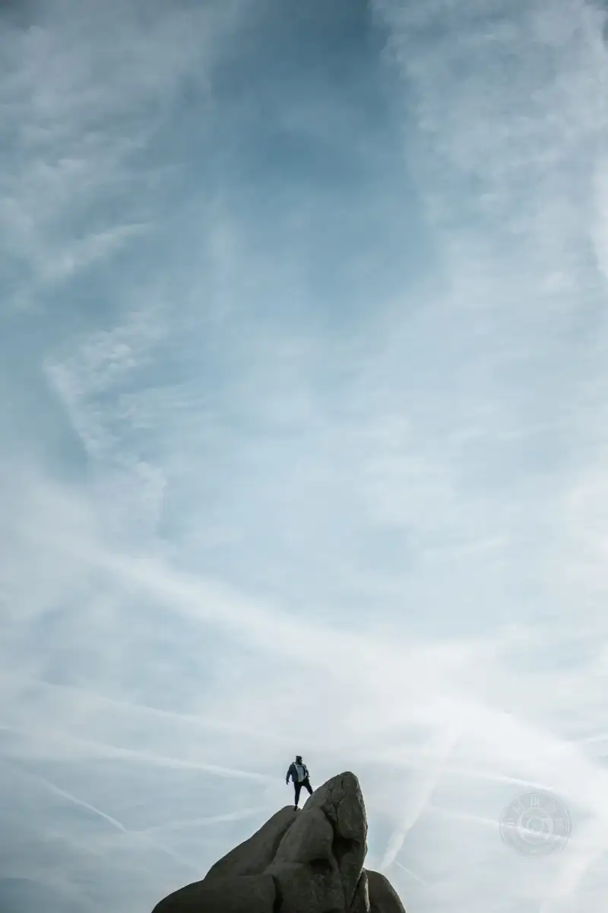
©Francisco Gonzalez
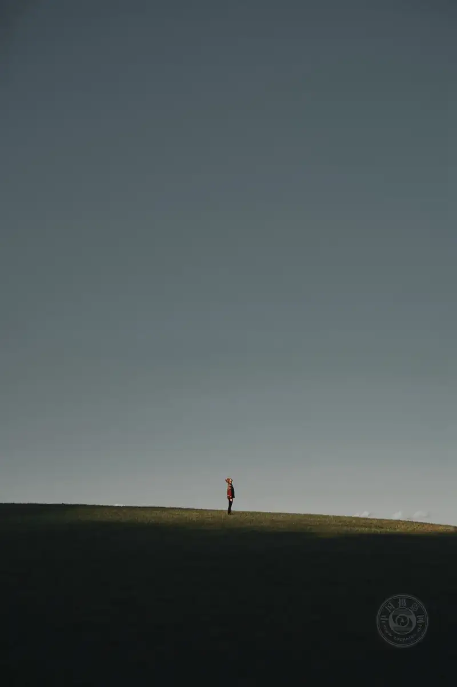
©Clay Banks
Negative space is a composition tool. You can use it to tell many kinds of stories and create many effects. Know what story you are telling, and know how negative space fits into that story. This will help you take photos that work.